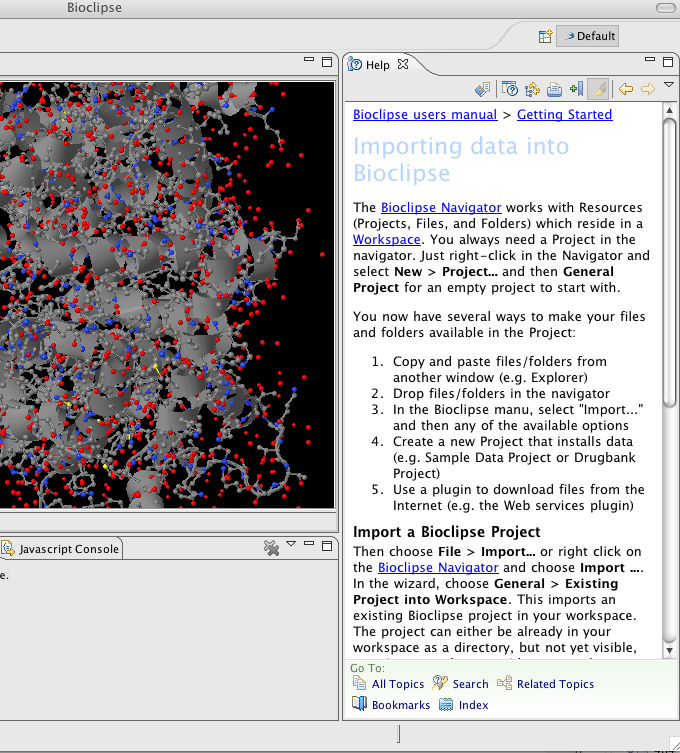
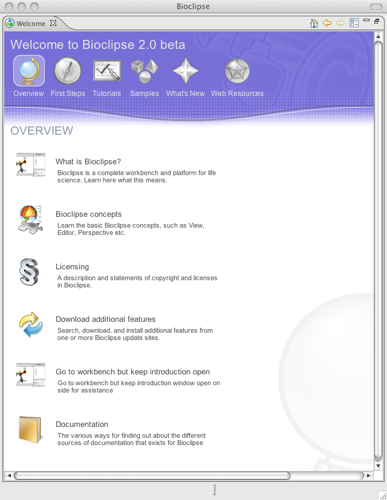

Bioclipse Help

Bioclipse help system
This is what you are currently reading!
The Bioclipse help system is the main resource for documentation of Bioclipse.
Here you find a searchable collection of documents, tutorials, and
reference documentation for the various installed features.
After you download and install a new feature, it might be good to
re-visit the Help system as new documentation might be available.
The Bioclipse help system is accesible from inside the Bioclipse Workbench
via the menu Help > Help Contents.
Help inside the workbench (Dynamic Help)
Bioclipse is equipped with a Dynamic Help View which is available
from the Help menu. Once opened, it allows users to click on any part
of the workbench to get instant help.
Bioclipse Frequently Asked Questions (FAQ)
Thi Bioclipse Wiki hosts the Bioclipse FAQ
with answers to the most common problems. There is also a Developer FAQ

Bioclipse Welcome Page (Introduction)
Here you have many alternatives to discover the many features of Bioclipse, and also
the possibility to launch cheatsheets
and install sample data.